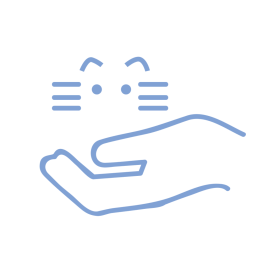
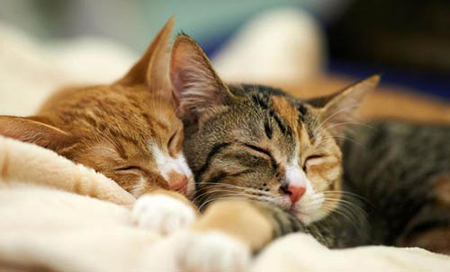
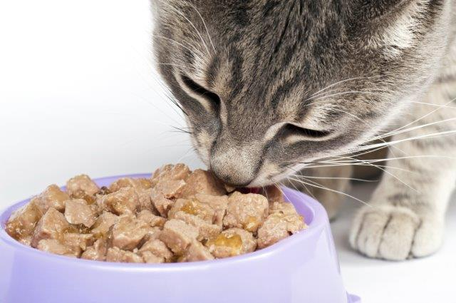
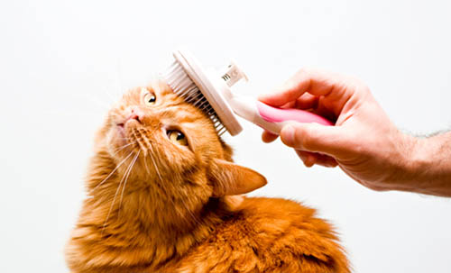
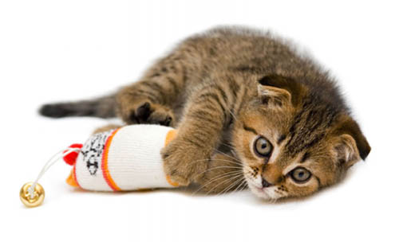

CARE GUIDE

Creating My Cat's Home
The art of creating a warm and safe environment for my cat.
Covering the basic nessecities that my cat would need, such as: bedding, toys and litter.

Feeding My Cat
How much should my cat eat and what should it eat.
Important questions answered for my cat to stay healthy.

Taking Care of My Cat's Hygiene
Maintaining my cat's hygiene by brushing and medicure, the know hows of grooming.

Tips for Better Care
Know the hazards cats may face from daily items that are used and prevent fatal accidents from happening.